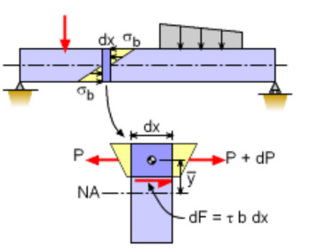
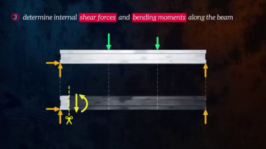
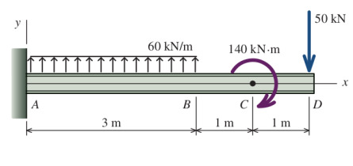
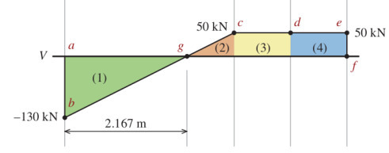

Materyel Mekaniği - 2
Kirişin Yatay Kesme Stresi
Yatay kesme stresinin mevcut olduğunun belki de en iyi ispatı alttaki şekli göstermek. İki tane tıpatıp aynı kirişi üst üste koysak ve üstten bir $P$ yükü uygulasak, eğer kirişler arası sürtünme çok az ise kirişler birbirinden ayrı şekilde büküleceklerdi, (b) şeklinde görüldüğü gibi.

Şimdi hayal edelim ki kirişler birbirine tutkal ile yapıştırıldı, bu şekilde iki parça tek bir parça haline geldi. Bu birleşik kiriş yüklendiğinde o yapıştırılan yatay yüzeyde stresler oluşmalıdır ki yapıştırılmış yüzeyin üst (b) şekildeki gibi kayması engellensin. Bu kesme stresleri sayesinde tek birleşik kiriş ayrı ayrı iki kirişten daha katıdır / serttir (stiff). Aynı kavram genel olarak moleküler yapışma ile tek parça nesnelere de uygulayanabilirdi. Bir vidaya dikey yönde uygulanan yük kesme yönünde stres yaratır, ki bu stresler moleküler bağlantılar üzerinden ortaya çıkar.
Türetmeye gelelim [2, sf. 388]. Birörnek bükülmeye maruz olan bir kirişi düşünelim, yine üstteki (a) resmini referans alıyoruz, bu kirişte $\mathrm{d} x$ genişliğindeki ufak bir parçaya odaklanalım, bu ufak parçanın sol kısmına etki eden kesme kuvveti ve bükülme momenti $V$ ve $M$. Eksende sağa gittikçe bu değerler değişik olabileceği için parçanın sağında $V + \mathrm{d} V$ ve $M + \mathrm{d} M$ olacaktır.

$\sigma_1$ ve $\sigma_2$ formüllerini yazalim, bükülme normal stres (flexure) formülünden $\sigma = My / I$ olduğunu biliyoruz,
$$ \sigma_1 = -\frac{My}{I}, \quad \sigma_2 = \frac{(M + \mathrm{d} M)y}{I} $$
Üstteki (b) resminde daha da ufak bir bölgeye odaklanalım, alttaki (c) resminde daha net gösteriliyor,

Bu parçanın en üst kısmı kirişin en üstü, orada yatay kesme stresi yok. Parçanın alt kısmındaki strese $\tau$ diyelim. (c) figürünün sol taraftan bakılan hali (d) resminde. Kuvvetleri düşünürsek, $F_1,F_2,F_3$ diyelim alttaki gibi olur.

Denge açısından
$$ F_3 = F_2 - F_1 $$
olmalıdır.
Bu kuvvetleri yerine koyalım o zaman, mesela $\sigma_1$'den hareketle,
$$ \sigma_1 \mathrm{d} A = \frac{My}{I} \mathrm{d} A $$
Tüm $F_1$ kuvveti için tanımladığımız alan üzerinden entegral alalım,
$$ F_1 = \int \sigma_1 \mathrm{d} A = \int \frac{My}{I} \mathrm{d} A $$
$F_2,F_3$ için benzer şekilde,
$$ F_2 = \int \sigma_2 \mathrm{d} A = \int \frac{(M + \mathrm{d} M)y}{I} \mathrm{d} A $$
$$ F_3 = \int \frac{(M + \mathrm{d} M)y}{I} \mathrm{d} A - \int \frac{My}{I} \mathrm{d} A = \int \frac{(\mathrm{d} M)y}{I} \mathrm{d} A $$
$$ F_3 = \frac{\mathrm{d} M}{I} \int y \mathrm{d} A $$
$F_3$'e farklı bir açıdan yaklaşalım, eğer $b$ boyunca kesme stresi $\tau$ değişmiyor ise, o zaman $F_3$'ü alttaki gibi de belirtebilirdik,
$$ F_3 = \tau b \mathrm{d} x $$

Kuvvet eşittir stres çarpı alandır, $b \mathrm{d} x$ ile belirtilen alan üstteki resimde görülüyor, kirişin altındaki eni $b$ boyu $\mathrm{d} x$ olan bölgeden bahsediyoruz. Burada $\tau$ sabit ise üstteki çarpım yapılabilir, tabii ki $\tau$ büyüklüğü $y$'ye bağlı olduğu için aşağı, yukarı değişimde $\tau$ değişirdi.
Devam edelim, son iki formülü birleştirince
$$ \frac{\mathrm{d} M}{I} \int y \mathrm{d} A = \tau b \mathrm{d} x $$
Tekrar düzenleyince
$$ \tau = \frac{\mathrm{d} M}{\mathrm{d} x} \left( \frac{1}{Ib} \right) \int y \mathrm{d} A $$
$\mathrm{d} M / \mathrm{d} x$ büyüklüğü kesme kuvveti $V$'ye eşittir.
$$ \tau = \frac{V}{Ib} \int y \mathrm{d} A $$
$\int y \mathrm{d} A$ entegrali $Q$ ile gösterilir, alansal bir momenttir, yine kiriş yan yüzey şekli ile alakalı, standart şekiller için bilinen formüller vardır, o zaman nihai formül
$$ \tau = \frac{VQ}{Ib} $$
Kirişin Yatay Kesme Stresi - Alternatif Anlatım
Kesme stresi $\tau$'yu bulmak için yine kirişin ufak bir kısmına odaklanalım,

Tüm etki eden kuvvetlerin toplamı sıfır olmak zorundadır [3],
$$ -P + (P + \mathrm{d} P) + \tau b \mathrm{d} x = 0 $$
ki $b$ kesme stresinin uygulandığı noktadaki kiriş derinliğidir.
$$ -\mathrm{d} P/\mathrm{d} x = \tau b \qquad (1) $$

$P$'yi bulmak için $A$ bölgesindeki stresleri entegre ediyoruz,
$$ \int_A \mathrm{d} P = \int_A \sigma_b \mathrm{d} A $$
Fakat daha önce bulduk ki $\sigma_b = -My / I$, yerine koyunca,
$$ P = \int_A - \frac{My}{I} \mathrm{d} A $$
$M$ ve $I$ sabittir, entegral dışına çıkartılabilir,
$$ P = - \frac{M}{I} \int_A y \mathrm{d} A = - \frac{MQ}{I} $$
ki görülen entegral bir alanın kütle merkezini bulmak için kullanılan standart bir entegraldir, $Q = \int_A y \mathrm{d} A$. Devam edelim üstte bulunan $P$'yi (1)'e sokunca,
$$ - \frac{\mathrm{d}}{\mathrm{d} x} \left( - \frac{MQ}{I} \right) = \tau b $$
$$ \frac{Q}{I} \frac{\mathrm{d} M}{\mathrm{d} x} = \tau b $$
Şimdi hatırlarsak $\mathrm{d} M/\mathrm{d} x$ türevi yatay kesme / teğetsel yükü $V$'ye eşittir. O zaman
$$ \frac{Q}{I} V = \tau b $$
Nihai yatay kesme stres denklemi,
$$ \tau = \frac{V Q}{I b} $$
Problemler
Altta kiriş odaklı bazı örnek problemleri çözeceğiz. Bir kirişe yük uygulandığında dengenin muhafaza edilmesi için kiriş içinde kuvvetler oluşur. Bu iç kuvvetler kirişin destek yapısına göre farklı şekillerde ortaya çıkabilir [1].

Üstteki soldaki resimde mesela iki boyutta pimli destek dönüşe izin verir, tekerlekli yatay sağ, sol hareketi ve dönüşü serbest bırakır. Sabit destekte hiç harekete izin yoktur. Hangi harekete izin verilmediğine göre yük uygulanması ardından üst sağdaki iç kuvvetler ortaya çıkacaktır, bunlar pimli durumda dikey ve yatay kuvvetler, tekerlekli durumda dikey kuvvet, sabit durumda ise her üç mümkün tepkilerdir, yani moment, dikey ve yatay.
Yükler noktasal ya da dağıtık şekilde uygulanabilir, altta noktasal kuvvet, dağıtık kuvvet ve noktasal moment örneklerini görüyoruz.
Tipik olarak problemin beklediği kesim kuvveti ve bükülme momenti grafikleridir, bu grafiklerde $x$ ekseni yatay olarak kirişin kendisi, $y$ ekseni ise o noktada etki eden kesim ya da moment büyüklüğüdür.
Çözme yöntemi olarak iki yaklaşım mevcut, biri her kritik noktada kirişin hissettiği içsel kuvvetler ve momentleri hesaplamak için o noktalarda denge denklemlerini kullanmak, ki bu denklemlere (ve temel fiziğe göre) kirişe uyguladığımız hayali bir kesitte etki eden tüm kuvvetler ve momentler birbirini dengelemeli. Ardından bu kesit tüm kiriş boyunca kaydırılır ve gereken kuvvetler aynı denge üzerinden hesaplanır. Eğer tüm yükler noktasal ise bu yaklaşım iyi işler.

Bir diğer yaklaşım Calculus kullanmak. Bu yaklaşım temelde sürekli bazda çözüm verdiği için dağıtık yük durumunda daha kolay işler, kritik noktalara odaklanmak yerine pür formulsel düşünebiliriz . Daha önce görmüştük ki kesim kuvvet formülünün eğimi (türevi) o noktadaki uygulanan yükün negatifidir $\mathrm{d} V / \mathrm{d} x = -w$, ve bükülme moment grafiğinin eğimi ise o noktadaki kesim kuvvetine eşittir, $\mathrm{d} M / \mathrm{d} x = V$. Şimdi ters yönde gidersek, ilk formülü entegre edince mesela iki nokta arasındaki kesme kuvveti farkının yükleme eğrisinin altında kalan aynı noktalar arasındaki alanın olduğunu görebilirdik.
$$ V_2 - V_1 = - \int_{x_1}^{x_2} w \mathrm{d} x $$
İkinci formülü entegre edince iki nokta arasındaki bükülme moment farkının kesme kuvveti eğrisinin altında kalan alanın olduğunu bulurduk [1].
$$ M_2 - M_1 = \int_{x_1}^{x_2} V \mathrm{d} xa $$
Problem 1

Üstüne birörnek yük $q$ uygulanan bir dirsekli (cantilever) kiriş için kesme kuvveti ve bükülme momenti diyagramı çizin [2, sf. 334].
Çözüm
$$ V - V_A = V - 0 = V = -\int_{0}^{x} q \mathrm{d} x = -qx $$
$$ M - M_A = M - 0 = M = \int_{0}^{x} -qx \mathrm{d} x = -\frac{qx^2}{2} $$

Problem 2
Alttaki kiriş için kesme ve bükülme moment diyagramlarını oluşturun [4, sf. 179].

Çözüm
Önce hareketsizliğin olduğu noktalardaki reaksiyon kuvvetlerini bulmak gerekir. Bu kuvvetler denge noktasında dikey ve yatay kuvvetlerin toplamının sıfır olma zorunluluğu üzerinen hesaplanabilirler.
Fakat bazı durumlarda zorluk çıkabilir, mesela eğer üstteki örnekte tek bir reaksiyon noktası olsa aşağı yöndeki kuvvetleri toplayıp tek reaksiyona eşitleyebilirdik. Fakat iki reaksiyon noktası var, bu etki iki tane reaksiyona nasıl yayılır. Bu noktada bükülme momentlerini dahil etmek gerekir. Reaksiyonlar bilinmiyor olsa da birer kuvvettir, ve bu kuvvetler, yük kuvvetleri ile beraber diğer sabit noktalar üzerinde bir moment oluşturur. Genel bir figure üzerinde görelim [4, sf. 86],

Reaksiyonlar $A_y$ ve $B_y$ nasıl hesaplanır?
Moment dengesi $M_A = 0$ ve $M_B = 0$ olmalı.
$$ M_A = 0 = B_y S - P a \to B_y = P \frac{a}{S} $$
$$ M_B = 0 = -A_y S + P b \to A_y = P \frac{b}{S} $$
Burada gördüğümüz $a/S$ ve $b/S$ basit birer orantıdan ibaret, yani tek $P$ yükünü mesafe oranlarına göre iki reaksiyon arasında paylaştırabiliriz.
Problemimiz icin
$$ A_y = 60 (6/9) + 150 (3/9) = 90 kN $$
Bir tane reaksiyonu bulunca aslinda digerini dikey kuvvetlerin toplaminin sifir olma sartindan elde edebiliriz,
$$ 90 - 60 - 150 + D_y = 0 $$
$$ D_y = 120 kN $$

Kesme diyagramı için kesme kuvvetinin yükün entegrali olduğunu hatırlayalım. Entegral demek alan demektir, bu problemde elimizde bir analitik sürekli fonksiyon yok, bazı yerlerde noktasal yükler var. Eğer bir alan olarak yük uygulaması var ise, bu durumda dikdörtgensel alanlar ile uğraşmamız gerekirdi, bir problemde her iki şekil yük uygulaması olabilir.
A noktasında +90 kN yük var, kesme kuvvetine ne olur?
Burada noktasal veri ile çalışmamız gerekiyor. Tam yükün uygulandığı noktada çok ufak bir $\Delta x$ alanına odaklanalım, bu ufak parçanın serbest-kütle (free-body) diyagramı şuna benzer [5, sf. 208], alt solda,

Dikey yöndeki kuvvetleri toplayıp sıfıra eşitlersek, ve $\Delta V$ için çözersek,
$$ P_0 + V - (V + \Delta V) = 0 \to \Delta V = P_0 $$
Yük noktasında kesme kuvveti farkı yüke eşitmiş, o zaman kesme kuvveti 90 kN'e zıplar.
Daha ilerlemeden bir noktasal bükülme momenti uygulansa ne olur onu da görelim. Yine üstteki resimde sağdaki figure bakalım, buradaki ufak parçanın serbest-gövde diyagramında tüm momentlerin toplamını sıfıra eşitleyelim, etrafında dönme olan referans noktası $O$ olsun, ve $\Delta M$ için çözelim,
$$ M_0 -M - V \Delta x + M + \Delta M = 0 $$
$$ \Delta M = M_0 + V \Delta x $$
$\Delta x$ sıfıra yaklaştıkça üstteki,
$$ \Delta M = M_0 $$
eşitliğine yaklaşır.
Problemimizle devam edelim, 90 kN'e zıplama oldu, kesme kuvveti grafiği o noktaya çıkar, B noktasına kadar düz devam eder, 60 kN ters yönde yük alınca 30 kN'ye düşüş olur, C'ye gelince yine aşağı yönde 150 kN yük alınca -120'ye düşüş olur. Yani grafik şuna benzer,

Moment grafiğine geldik, analitik versiyondaki alan hesabı burada ayrıksal bağlamda uygulanabilir, üstteki figürde alanların içine büyüklüklerini yazdık, 270, 90, -360 diye. Tabii her noktada o noktanın solundaki alan dikdörtgen toplamları hesaba alınmalı, bu da bize alttaki şekli verir,

Problem 3
Alttaki destekli kiriş için kesme kuvveti ve bükülme moment diyagramlarını çizin. Maksimum bükülme momentinin hangi noktada olduğunu bulun.

Reaksiyonları bulalım, hareketi engelleyen bir nokta var, kirişin duvara bağlandığı yer, orada dikey ve bükülme engelleniyor, o zaman iki tane reaksiyon ortaya çıkar, $A_y$ ve $M_y$ diyelim, denge denklemleri üzerinden,
$$ \sum F_y = A_y + 180 kN - 50 kN = 0 \to A_y = -130 kN $$

Bükülme moment dengesi üzerinden,
$$ \sum M_A = (180 kN)(1.5 m) - (50 kN)(5 m) - 140 kN \cdot m - M_A = 0 \to M_A = -120 kN $$
Kesme kuvveti diyagramını alttaki gibi çizeriz,

Daha önce türettiğimiz $\Delta V = A_y$ eşitliği üzerinden grafik hemen -130 kN'ye düşecektir. Dağıtık yükün altındaki alanın, entegralinin kesme kuvvetine eşit olması bilgisini kullanacağız şimdi, bu örnekte analitik formül yok, alan hesabını basit dikdörtgen hesabı ile yapabiliriz, başlangıç kesme kuvvetinden 3 metre sonra 60 kN/m çarpı 3 m = 180 kN eklenmiş olacak, bu bizi 50 kN seviyesinde getirir. Bu geçiş lineer olur, bir eğim üzerinden, hesaplanan alan sağa gittikçe gittikçe büyüyen dikdörtgenler vasıtasıyla. Devam ediyoruz, D noktasına gelene kadar değişim yok, o noktada ters yönde 50 kN var, böylece kesme kuvveti 0 seviyesine iniyor.
Bükülme moment diyagramı kesme kuvveti diyagramının alan hesabı üzerinden yapılacak,

Başlangıç bükülme momenti ilk anda $-120 kN \cdot m$ seviyesine düşer, çünkü orada noktasal bir moment var. Daha sonraki eklenen moment için son iki diyagramdaki $g-j$ eşlemesine bakalım, oraya gelirken bir üçgen alanı var (yeşil renkli) bu alan -130 kN çarpı 2.1667 m bölü 2 ile hesaplanır, ve -140.8355 sonucunu verir. Bu alanı -120 $kN \cdot m$'ye ekleyince -260.8355 $kN \cdot m$ elde edilir.
Kaynaklar
[1] The Efficient Engineer, Understanding Shear Force and Bending Moment Diagrams, https://youtu.be/C-FEVzI8oe8
[2] Gere, Mechanics of Materials, 7th Edition
[3] Gramoll, Mechanics, http://www.ecourses.ou.edu/cgi-bin/ebook.cgi?topic=me
[4] Kassimali, Structural Analysis, 6th Ed
[5] Philpot, Mechanics of Materials
Yukarı